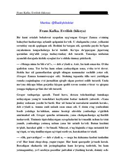

EGregor Zamza bir kechada hasharotga aylanib, hayoti butunlay o'zgarib ketadi.
Frans Kafkaning 'Evrilish' hikoyasi bir kuni ertalab uyg'onib, o'zini bahaybat hasharotga aylanib qolganini ko'rgan Gregor Zamza hayotini tasvirlaydi. Asarda inson begonalashuvi, oila va jamiyat munosabatlari chuqur ramziy tarzda yoritilgan. Bu dunyo adabiyotining eng mashhur va ta'sirli asarlaridan biri hisoblanadi.